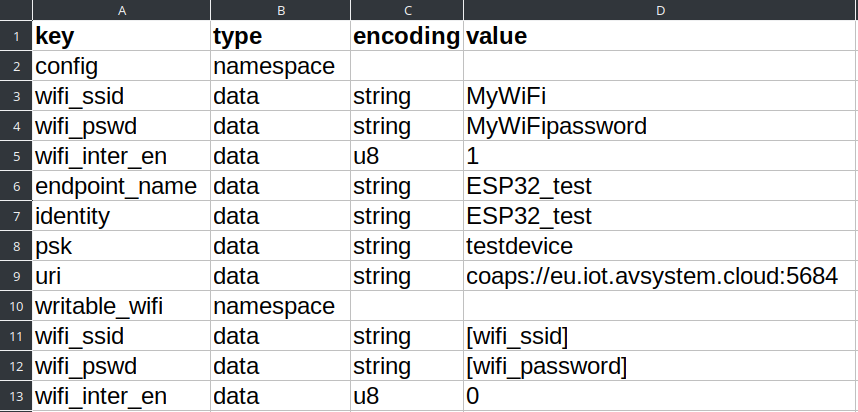
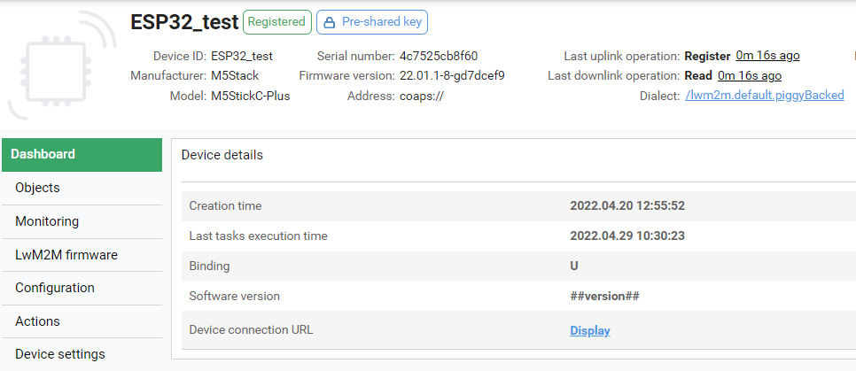
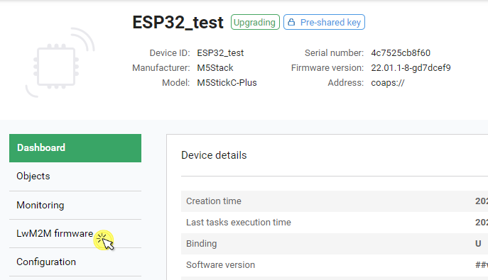
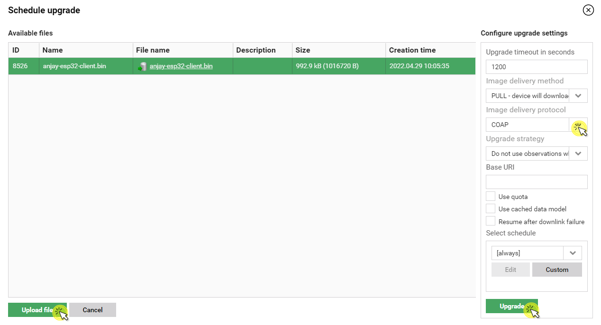
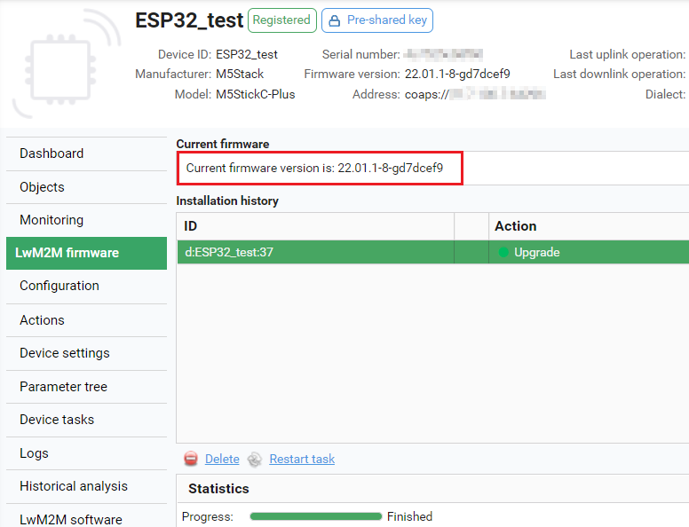

M5StickC#
Integrate your ESP32-based device to manage it via Coiote IoT DM.
Prerequisites#
- An M5StickC device.
- Installed ESP-IDF and dependencies (installation steps 1-4 from ESP32 official documentation). Supported ESP-IDF version is v4.4.
- A user with access to the Coiote IoT Device Management platform.
Step 1: Download the Anjay ESP32 client files#
- Create a project directory for the integration.
- Go to https://github.com/AVSystem/Anjay-esp32-client/releases and download
m5stickc-plus.binandnvs_partition_gen.pyto your project directory.
Step 2: Configure the client using an NVS partition#
-
Create a
nvs_config.csvfile and save it in your project directory. In the file, provide your credentials in [wifi_ssid], [wifi_password], [endpoint_name], [identity], [psk], [lwm2m_server_uri] (without the[]brackets). Use the following snippet as a template:key,type,encoding,value config,namespace,, wifi_ssid,data,string,[wifi_ssid] wifi_pswd,data,string,[wifi_password] wifi_inter_en,data,u8,1 endpoint_name,data,string,[endpoint_name] identity,data,string,[identity] psk,data,string,[psk] uri,data,string,[lwm2m_server_uri] writable_wifi,namespace,, wifi_ssid,data,string,[wifi_ssid] wifi_pswd,data,string,[wifi_password] wifi_inter_en,data,u8,0Note
The additional parameters under the writable_wifi namespace are used to provide a secondary Wi-Fi configuration (it is not obligatory). This allows for switching between Wi-Fi configurations while the device is running.
Note
The nvs_config.csv file can also be downloaded from https://github.com/AVSystem/Anjay-esp32-client/releases
-
Open a command line interface, go to your project directory, and generate the NVS partition:
pip3 install future cryptography
python3 nvs_partition_gen.py generate nvs_config.csv nvs_config.bin 0x4000
pip3 install future cryptography
python nvs_partition_gen.py generate nvs_config.csv nvs_config.bin 0x4000

Step 3: Add device to Coiote IoT DM#
To connect your M5StickC to the Coiote IoT Device Management platform, use your access to a Coiote IoT DM installation, or register at https://eu.iot.avsystem.cloud/ to get access.
To connect the board, log in to the platform and follow onboarding guide.
Step 4: Flash the board and run device#
Connect the M5Stick board to a USB port of your machine and open ESP-IDF command line application.
Use pre-built binaries to flash the board and provide credentials by flashing the NVS partition binary.
-
Install the
esptool.py:pip install esptool -
Flash the board:
Tip
Before flashing the device you should erase the flash first to make sure you have correct settings:
esptool.py erase_flashesptool erase_flashesptool.py -b 750000 --chip esp32 write_flash 0x0000 m5stickc-plus.binesptool -b 750000 --chip esp32 write_flash 0x0000 m5stickc-plus.bin -
Flash the NVS partition binary:
esptool.py -b 750000 --chip esp32 write_flash 0x9000 nvs_config.binesptool -b 750000 --chip esp32 write_flash 0x9000 nvs_config.bin
Once executed, the device will be reset and run with the configuration you provided.

M5StickC LwM2M objects#
After successful connection to Coiote IoT DM, you can explore the available device objects.
| Target | Objects |
|---|---|
| ESP32 common | Security (/0) Server (/1) Device (/3) Firmware Update (/5) WLAN connectivity (/12) |
| M5StickC-Plus | Push button (/3347) Light control (/3311) Temperature sensor (/3303) Accelerometer (/3313) Gyroscope (/3343) |
Upgrade device firmware over the air#
To perform a FOTA upgrade, you need an established connection between the M5StickC and Coiote IoT DM (see instructions above).
Build new firmware version#
- Open a command line interface and run
git clone https://github.com/AVSystem/Anjay-esp32-client. - Go to the directory of the cloned repository and run
idf.py set-target esp32. - Run
git submodule update --recursive --init. - Run
idf.py menuconfig, navigate toComponent config/anjay-esp32-client, and from the supported boards, select M5StickC. Presssandenterto save. - Run
idf.py build. - Once executed, check if the binary file has been built in the following path
$PROJECT_DIR/build/anjay-esp32-client/build.
Schedule upgrade in Coiote IoT DM#
-
In your Coiote IoT DM account, select your device in Device inventory and click the LwM2M Firmware tab.

-
Click Schedule new firmware upgrade.
-
Click Upload to select the binary file from your local drive, select COAP in the Image delivery protocol, and click Upgrade.
Tip
The COAPS option is also supported. To use it, you may need to additionally provide the Base URI parameter (depending on your server settings).

-
The FOTA upgrade is now scheduled. Note that it might take a few minutes to complete.
-
Once the upgrade is finished, you can check the new version of the firmware under Current firmware. 
Next steps#
If you want to develop your own LwM2M-enabled application based on M5Stick, check Anjay-esp32-client and start prototyping!